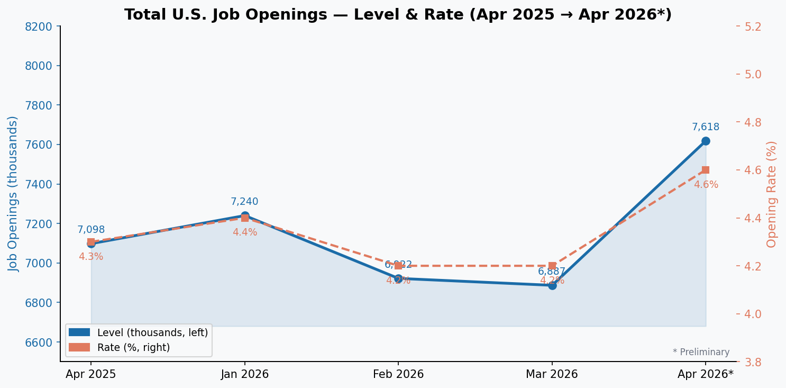
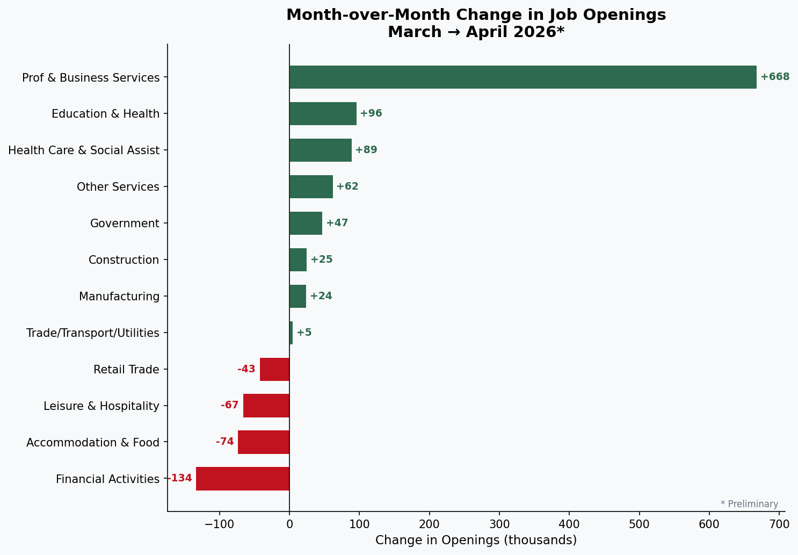
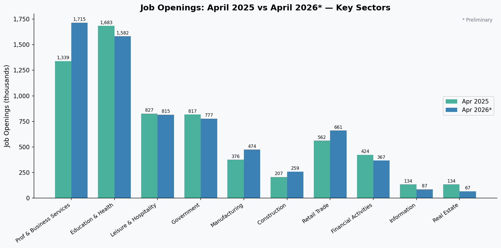
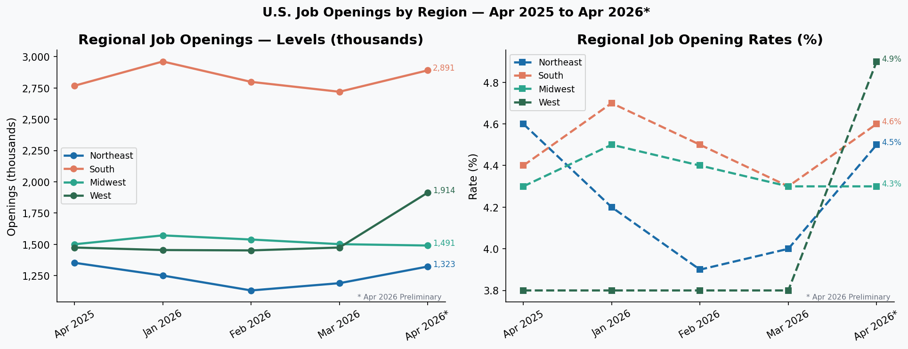
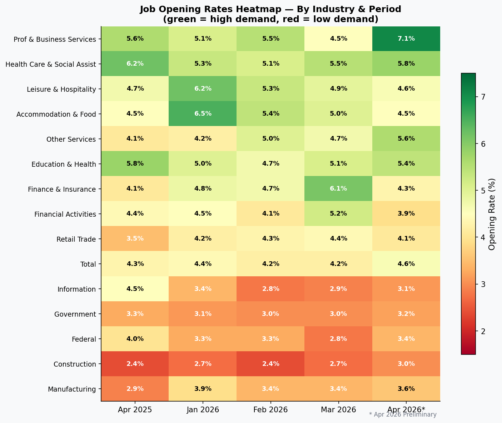
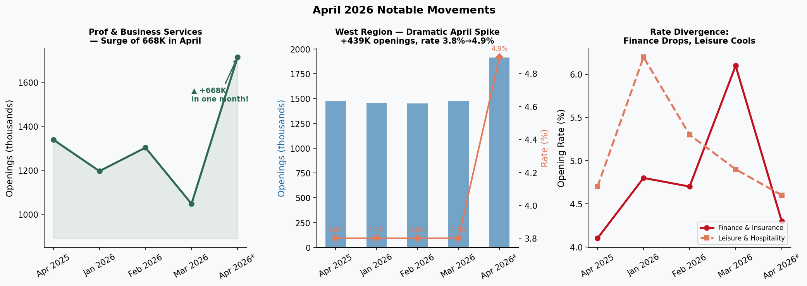

Total Job Openings: Level & Rate (Apr 2025 → Apr 2026*)
What to notice: Openings dipped in Feb–Mar 2026 before snapping back to 7.618M in April — a 731K single-month jump and the largest one-month increase in this dataset. The opening rate rose from 4.2% to 4.6%, still below its 2024 highs but notable given the prior two-month slide.

Month-over-Month Change: March → April 2026* (by sector)
What to notice: Professional & Business Services accounts for the lion's share of the April rebound (+668K), dwarfing all other sectors. Financial Activities shed 134K — the single largest decline — while Leisure & Hospitality fell 67K continuing its multi-month retreat from its January 2026 peak of 1.119M.

Year-over-Year Comparison: April 2025 vs April 2026*
What to notice: Professional & Business Services surged +376K year-over-year. Conversely, Information (-47K, −35% YoY) and Real Estate (-67K, −50% YoY) remain well below prior-year levels, suggesting structural softening in tech-adjacent hiring and property markets. Leisure & Hospitality also declined YoY despite a strong Jan 2026.

Job Openings by U.S. Region (Levels & Rates)
What to notice: The West saw a dramatic one-month surge (+439K, +29.8%), pushing its opening rate from a stable 3.8% (unchanged Jan–Mar 2026) to 4.9% — the highest regional rate in April. The Midwest was the only region to post a month-over-month decline (−11K), and its rate held flat at 4.3%. The South remains the largest absolute contributor to openings at 2.891M.

Job Opening Rates by Industry & Period (%)
What to notice: The heatmap reveals structural patterns: Health Care & Social Assistance has persistently high rates (5.1–6.2%), reflecting chronic workforce shortages. Finance & Insurance's March spike to 6.1% was reversed sharply in April (4.3%), indicating volatility rather than a structural shift. The Information sector's year-long decline (4.5% → 3.1%) is clearly visible as a row fading from green to yellow.

Three Anomalies Worth Watching
Left: Prof & Business Services surged to 1.715M — its highest in this window, up 39% from its March trough. Center: The West region's rate broke decisively out of its 3.8% plateau. Right: Finance & Insurance's rate collapsed 1.8 pp in a single month; Leisure & Hospitality continues its slow fade from a Jan 2026 peak.

Summary for Researchers
- April rebound is concentrated, not broad-based. Of the +731K national gain, roughly 91% (668K) came from Professional & Business Services alone. A broad recovery would see gains distributed more evenly across sectors.
- West region is the geographic outlier. A 4.9% opening rate in April vs. 3.8% for the prior three months suggests a sudden acceleration in Western labor demand — potentially driven by tech, clean energy, or professional services hiring clusters in California, Colorado, or Washington.
- Health Care remains structurally tight. With a 5.8% opening rate and 1.467M openings, Health Care & Social Assistance has maintained consistently elevated demand throughout the period — a signal of ongoing workforce shortages, not cyclical fluctuation.
- Information sector decline is persistent. From 134K (Apr 2025) to 87K (Apr 2026), a 35% year-over-year contraction. This aligns with broad tech sector hiring freezes and continued AI-driven productivity gains reducing headcount needs.
- Financial Activities volatility is unusual. The sector swung from 501K in March to 367K in April (−26.7%), with Finance & Insurance rates moving 6.1% → 4.3%. This magnitude of monthly swing warrants monitoring for data revision in next month's release (marked preliminary).
- Leisure & Hospitality cooling from its January peak. Down from 1.119M (Jan 2026) to 815K (Apr 2026), a 27% decline in three months, suggesting seasonal normalization and/or easing post-pandemic labor competition in this sector.
- Federal government openings hit a trough in March (78K). The April rebound to 95K may reflect delayed hiring resumptions after budget or policy-related pauses. The year-over-year decline from 122K to 95K (−22%) is notable given the current policy environment.
Scan to open this dashboard on your device
Share this interactive report with your research group — no login required. Hosted on GitHub Pages for fast, reliable access.